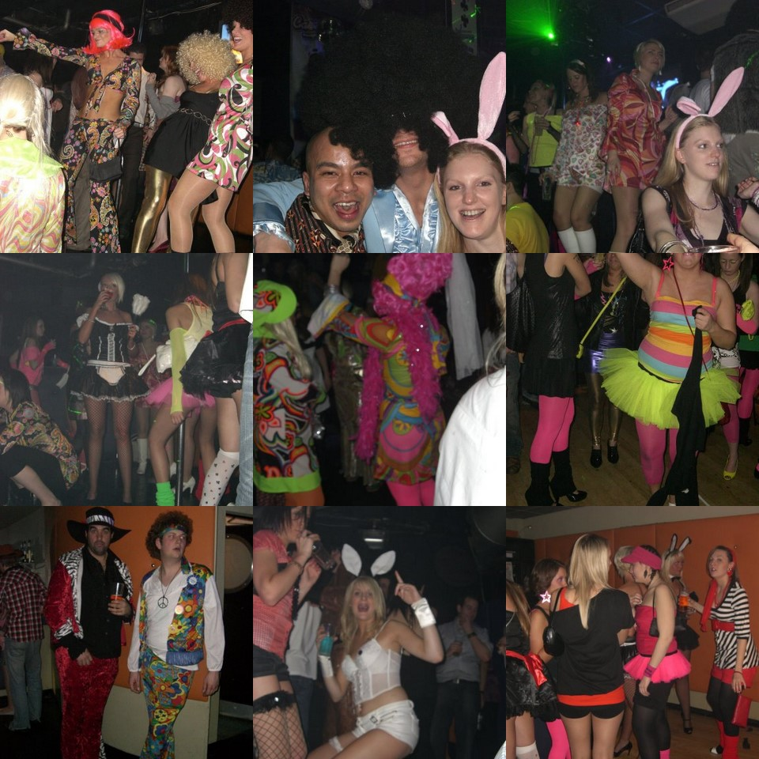
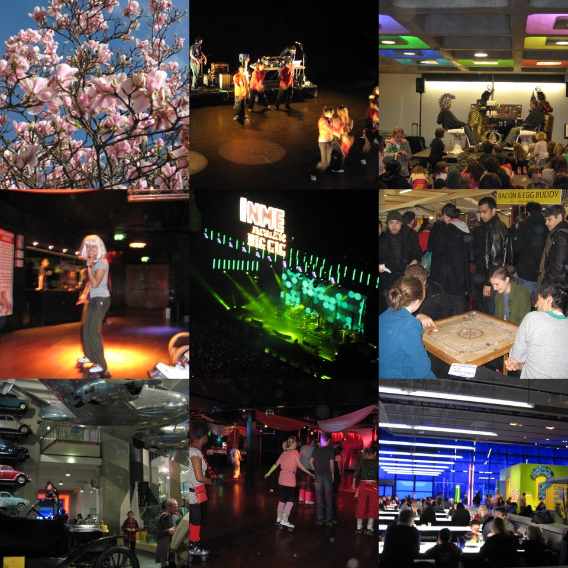

© 2008 admin

blonde wig in the london gale

Hey,
More stuff from the Jan-Feb filing cabinet – NME Big Gig (Klaxons, Bloc Party, Kaiser chiefs, Manic St Preachers, Cribs), Linkin Park concert, V day Vauxhall Roller disco, Carwash 70s disco on Old Street, Science Museum, Barbican, rappers from China, Sundays at Spitalfields markets..
Horrible week of wind, rain…
Sun came out today!
Hooray!
Hope you’re well
Shi
19 Mar
This entry was written by
admin, posted on
March 19, 2008 at 8:30 am, filed under
postcards,
postcards 2008 and tagged
70s,
concert,
disco,
london,
museum,
roller,
science,
vauxhall. Bookmark the
permalink. Follow any comments here with the
RSS feed for this post.
Both comments and trackbacks are currently closed.
View EXIF Data